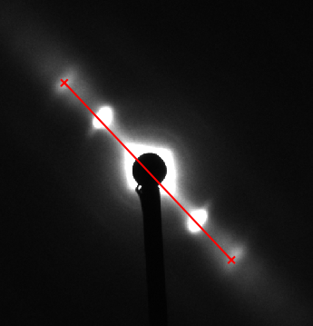
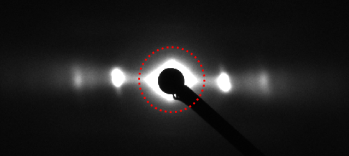
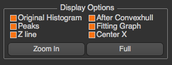
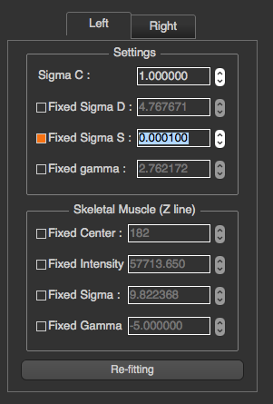

How to use¶
Once the program run, you will see an input file dialog, so you can select the file you want to process. If you want to process multiple files in a folder, please select a file in that folder, and click “Process Current Folder”.
When the processing window opened, there are 3 tabs on the top,
Image¶
In this tab, you will see the selected image, Display Options section, and Image Processing section, Reject check box, next button previous button, and Process This Folder button.

Display Options¶
In Display Options section, you are able to select what you want to see in the image. All check boxes are all about displaying information in the image. In image above,
- Center : blue dot
- Integrated Area (Box Width) : green lines
- R-min : red dotted circle
- Histogram : white plot as original histogram and red line as fitting model
- Peaks : yellow lines

You can also set min and max intensity for displayed image in this section. To zoom the image, you can click “Zoom In” button and select the zoom in area in the image, or using mouse wheeling in the image directly. This options in this section will not affect the image processing.
Image Processing¶
{kind=link}
In Image Processing section, you will see multiple buttons allow you to calibrate the image and set some properties manually.
Calibration Settings¶
After “Calibration Settings” is pressed, there’s a window popped up. This window will allow you to select the calibration image by clicking on Browse or setting parameters manually. See Calibration Settings for more details
Set Rotation and Center¶
Before setting manual rotation and center, it’s better to zoom the image to the area of the diffraction because it will be easier to set these parameters correctly. To set the rotation and center, you need to click 2 positions of the image. The first one will be a reflection peak on one side of the equator, and the second one will be the corresponding (opposite) reflection peak on the other side of the equator. To cancel, press ESC.

Set Rotation Angle¶
This assumes that the center of diffraction is correct. After the button is clicked, the program will allow users to select an angle by moving a line. Clicking on image when the line is on the equator of the diffraction will set manual rotation angle. To cancel, press ESC. (Make sure that “Fixed Angle” is not checked)

Set Manual R-min¶
After the button clicked, you will see the red circle when you move the cursor around. To set manual R-min, please click on image when the circle size is the size of R-min you want. To cancel, press ESC.

Set Box Width (Integrated Area)¶
To set the integrated area, you need to click 2 positions of the image. The first one will be the start line, and the second one will be the end line. To cancel, press ESC.

Blank image and Mask¶
This option is available on version 1.6 or upper. Click Here to see more details
Fixed Angle¶
This feature will allow users to fixed rotation angle for every image which has not been processed. After the checkbox is checked, the manual rotation angle which is set by buttons will be ignored.
Fixed Box Width (Integrated Area)¶
This feature works in the same way as fixed angle, but the fixed value will be start and end position (pixel) of the box
Fitting¶
In this tab, you will see the graph produced from the intensity histogram in the integrated area, and fitting information.

General Settings¶
In the section, you are able set necessary parameters for fitting process including skeletal muscle checkbox, number of peaks on each side, and fitting model. The model functions for the peaks currently supported are Voigtian and Gaussian. If the Number of Peaks selected are more than the number of peaks, the program still tries to fit the model with the selected Number of Peaks.

In cases where the program misplaces the peak locations, you can do peak selection manually by clicking on “Start Manual Peak Selection”. After the button clicked, you can select the how many peak locations you want by clicking on the graph. However, it’s sufficient to just select S10 of left and right side. Click “Done” when you are done. To cancel, press ESC.

Display Options¶
In this section, you will be able to select what you want to see in the graph. All check boxes are all about displaying information in the graph. In the image above,
- Original Histogram : black line
- After Convex hull : green line
- Peaks : red lines
- Fitting Graph (Best fit function graph) : blue line
- Z line : yellow line
- Center X : magenta line

You can also zoom-in to see more detail by the same mechanism as in Image tab. All options in this section will not affect the fitting results.
Settings¶
In this section, once a setting is changed, the fit will be recalculated. You can manually configure and lock all parameters of fitting model including Sigma C, Sigma S, Sigma D, gamma and skeletal parameters. These parameters are independent on each side, so you have to choose the side by choosing left or right tab before setting these parameters. Press “Re-fitting” when you want to re-fitting will the new settings.

Diffraction data taken on integrating detectors such as CCD detectors will have read noise. This can result in a constant offset to the background subtracted diffraction peaks from zero. This can lead to systematic error(“BAckgeos in your peak measurement. In this case it is possible to add a user selected constant offset (“Background K”) that is added to the fitting function prior to fitting the data. In practice this number is selected as the number that provides the best “eyeball” fit to the residual background. Since this residual background often has some residual structure that is hard to model, the constant is not adjusted by the fitting proces.s
Results¶
Important fitting results are shown in this tab. If the calibration parameters are set, the program will also show d10.